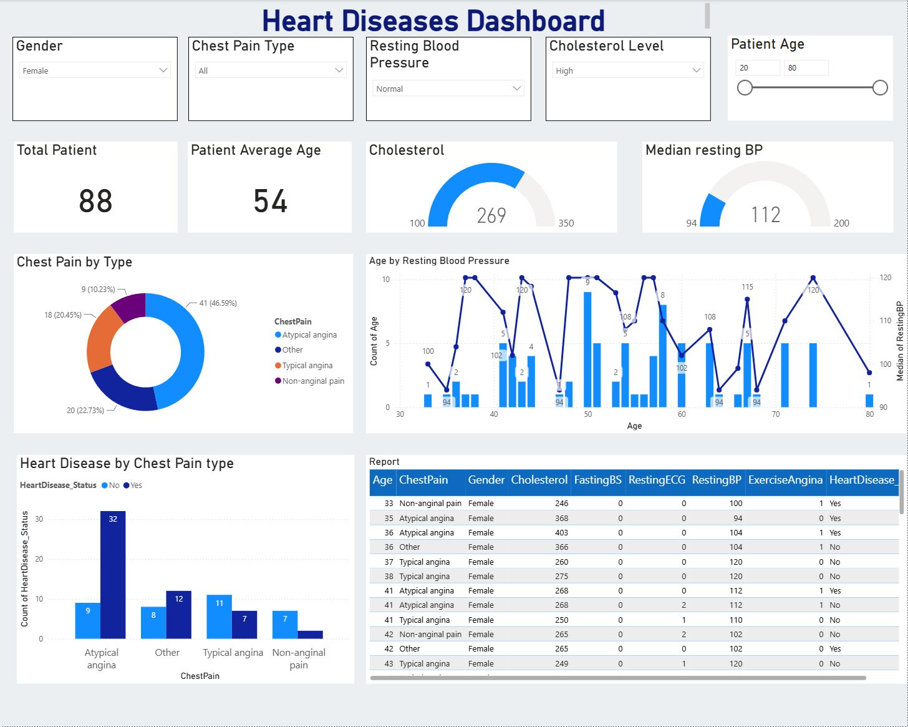

Heart Disease Data Exploration
An educational Power BI report for exploring recorded attributes and labels. The report artefact is available; its underlying data still needs verification.
Power BI Desktop review

Correction made in the review copy
The resting blood-pressure gauge originally used Sum. The separate review copy now uses Median and is labelled “Median resting BP”. This corrects the aggregation; it does not validate the data, category thresholds or clinical interpretation. The original file is preserved alongside the separately reviewed copy.
The analytical question
How are recorded demographic attributes and measurements distributed, and how do documented groups differ in this dataset? These are questions the dashboard is intended to explore, not verified findings.
What the project file confirms
The original Heart Disease Model.pbix contains a report page named “Heart Diseases” with 14 visual containers: five slicers, two cards, two gauges, a donut chart, a column chart, a line/column combination, a table and a text box. This was checked directly in the saved report layout; it does not establish the correctness of the measures or results.
Verification before reporting results
The exact raw dataset, publisher reference and data dictionary have not been recovered. The former 2,943-record claim and UCI attribution are not presented as verified. Next steps are to recover the source, reconcile imported rows, document cleaning, validate the remaining DAX independently and reconcile the imported values. The current Desktop review is shown with its filter context.
No synthetic dashboard screenshot or unsupported medical result is substituted for that missing evidence.
Scope and practical relevance
This project demonstrates the organisation of an exploratory Power BI report. It is not a diagnostic, treatment or clinical prediction tool. Sample associations must not be interpreted as clinical conclusions.
Download and inspect the report
Download reviewed Power BI report
The count card counts non-empty ages rather than verified unique patients. The BP gauge has a fixed minimum of 94 that still needs range validation. See the repository configuration audit for details.